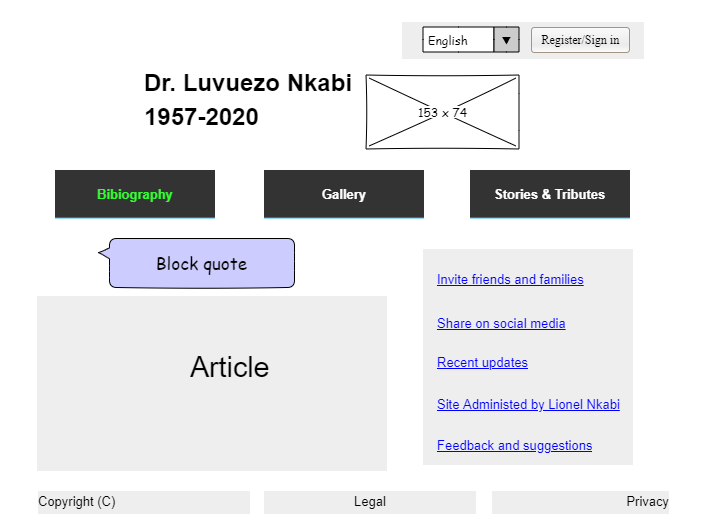
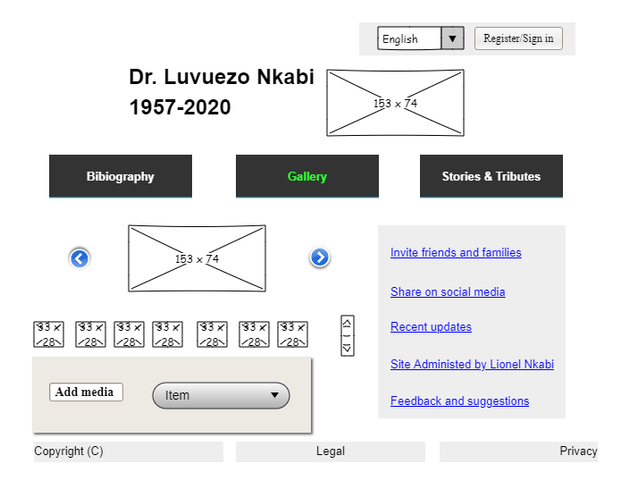
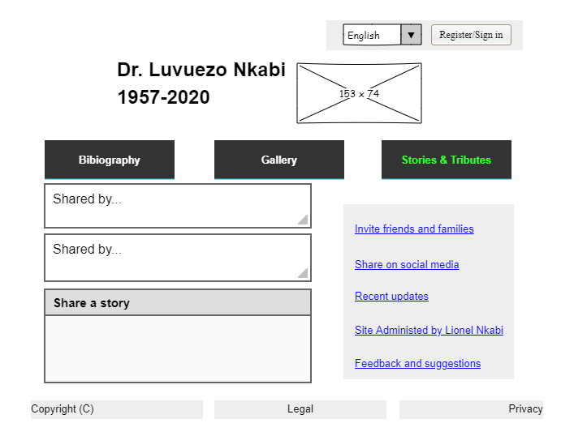

The site will attempt to keep the memory of my late father, Dr. Luvuezo Nkabi, alive by displaying a webpage illustrating a short biography of his life. A gallery page is provided to view photos and videos of the deceased alone and alongside friends and family members. Signed in members will be able to upload photos and videos of their time with the deceased. Furthermore, signed in users will also be provided a platform to share stories they have of their time with the deceased or to simply pay him a tribute.
The site aims to create a digital memorial for my late father, Dr. Luvuezo Nkabi, so that his memory is better kept alive for friends and family born and unborne to later get to know about him.
The bilingual site (english and french) consists of three webpages. The Biography page gives a short description of the deceased's life and the motivation behind the creation of the website. The second page contains a Gallery page displaying via a slide show photos and videos shared by signed in members and provides the platform for members to upload media (photos and videos) for viewing. Lastly the Stories & Tributes page allows signed in members to share personal stories of their times with the deceased or to just pay a tribute towards him. A tab on the top-right corner of the website will convert the site from english to french and vice versa. A second tab will enable for users to register or sign in and the last tab will provide a link to contact the site's administrator.
Each page will contain an aside block with the following:
The target audience will be family and friends of Dr. Luvuezo Nkabi (MD). The audience is expected to be english speaking, french speaking or both.
Each page in the site will contain an aside block with a link for users to Send Suggestions so that the user's satisfaction can be assessed. Consequently, along with Web analytics, this is how the site's success will be determined.
It is expected that the user will browse this website using different web browsers and devices (computer and mobile) with different screen sizes and resolutions, so therefore the site needs to be tested on various browsers and devices to ensure correct operation across as many platforms as possible. This site needs to cater to both english and french speaking audience, hence it needs to be bilingual. Javascript will be used for amongst others slide show display. A database needs to be used to store the details of registered members.
The technical factors that could limit the site include UX design skills of the website administrator, low Javascript and back-end programming skills by the web administrator. The cost of hosting a site will limit the size to which it will be allowed to grow.
The site is designed with the user in mind. The architecture chosen for the site information is the one which best suits the user in terms of navigability. Page layout are first designed using mockups and later developed into wireframes.
The information architecture of the site is organised in a Web Structure format to allow the user to jump freely from any page to any other page. This allows for easy browsing as all major information is easily accessible. Further, the user will always know exactly where they are on the site as the current location will be highlighted on the tap menu with its link disabled.
The layout of each page is first visually represented in order to aid the construction and content development proces. The following images below depict the layout of the three pages which constitutes the website.


